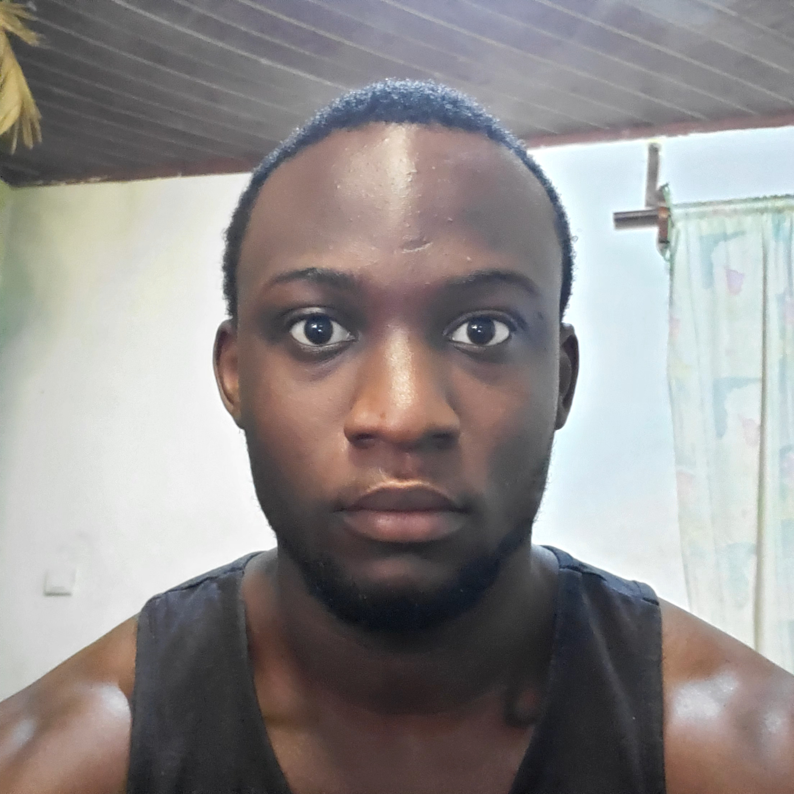
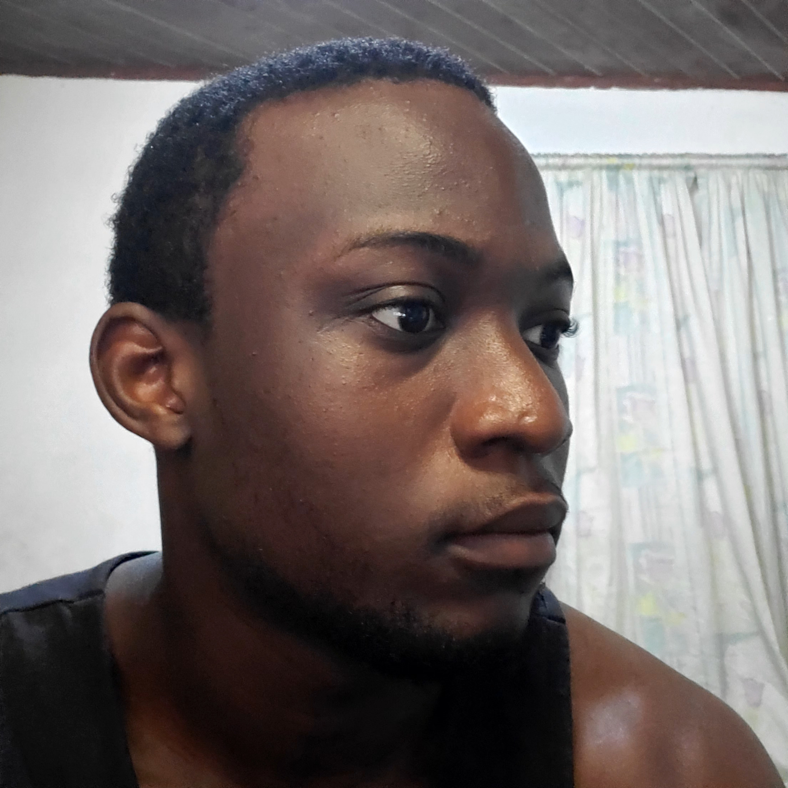
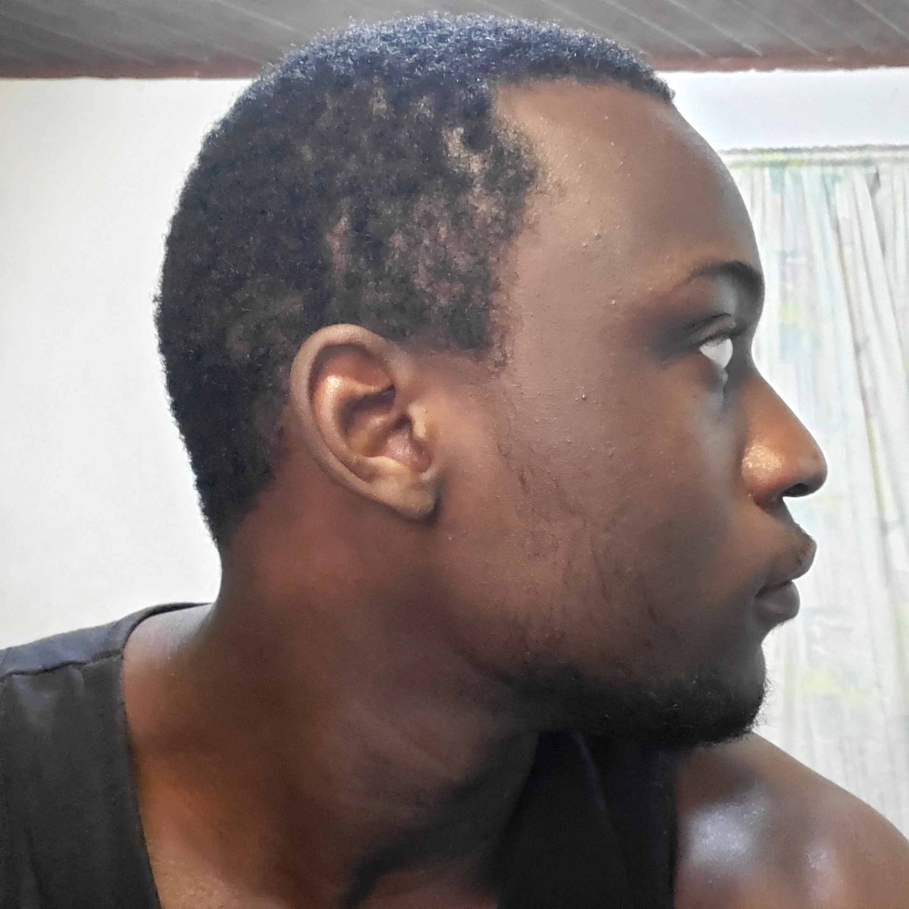

Ton visage 3D · Football Life 27
Cette page est le lien de visualisation du projet. Les photos servent de références de sculpture. Le modèle 3D final sera affiché ici dès que le maillage aura été créé et contrôlé.
Visualiseur 3D
Le fichier 3D face.glb n'est pas encore disponible. Pour l'instant, consulte les références ci-dessous. Aucun visage générique n'est présenté comme étant le tien.
Photos de référence



Cible de livraison : maillage 3D réel, UV et textures. L'intégration Football Life 27 sera validée séparément dans le jeu.